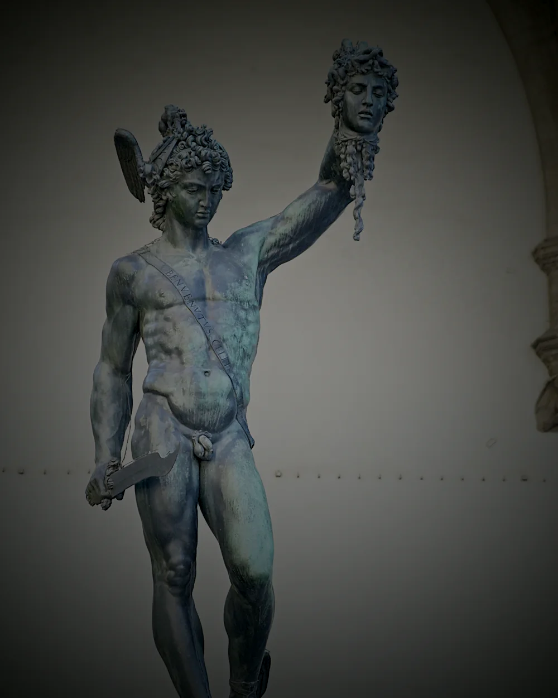
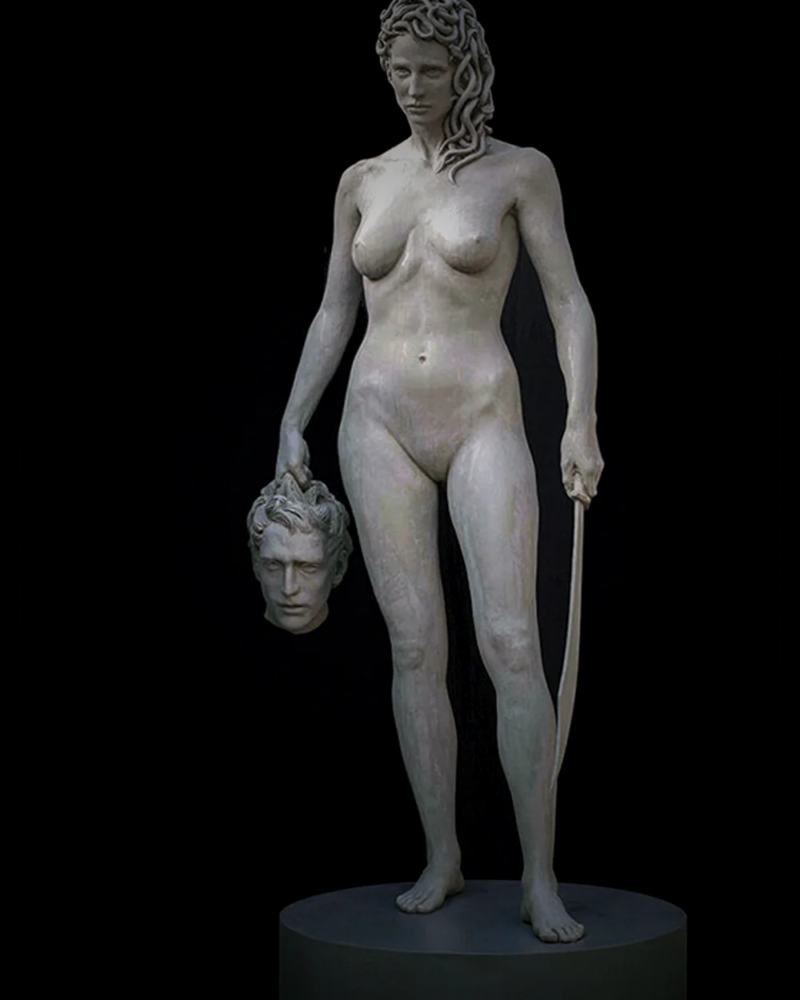
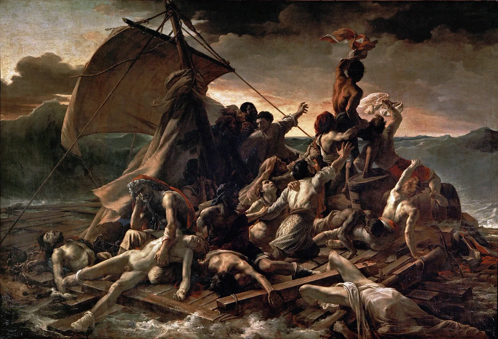

Szene 7 von 9
ΗKunst
„Its horror and its beauty are divine.“
„Ihr Grauen und ihre Schönheit sind göttlich.“
Jedes Medusenhaupt zeigt, wovor seine Zeit Angst hatte – oder wen sie bewunderte.
Vom Tempelgiebel auf Korfu bis zur Bronze in Manhattan: Zweieinhalb Jahrtausende lang haben Künstler Medusa gemeißelt, gegossen und gemalt. Mal ist sie Fratze, mal Opfer, mal Trophäe, mal Siegerin.
Fahre über einen Titel, um das Werk zu sehen. Ein Klick öffnet das Werkblatt.
Elf Werke · chronologisch
Rollentausch
Wer hält wessen Kopf?
Ziehe die Linie – und aus dem Helden mit der Trophäe wird die Frau mit dem Schwert.


Abb. 39Benvenuto Cellini, Perseus, 1545–1554, Florenz · Foto: Jebulon, Wikimedia Commons, CC0 · Abb. 40Luciano Garbati, Medusa mit dem Haupt des Perseus, 2008 · Foto: Luciano Garbati, offizielle Website, via TheCollector, urheberrechtlich geschützt
